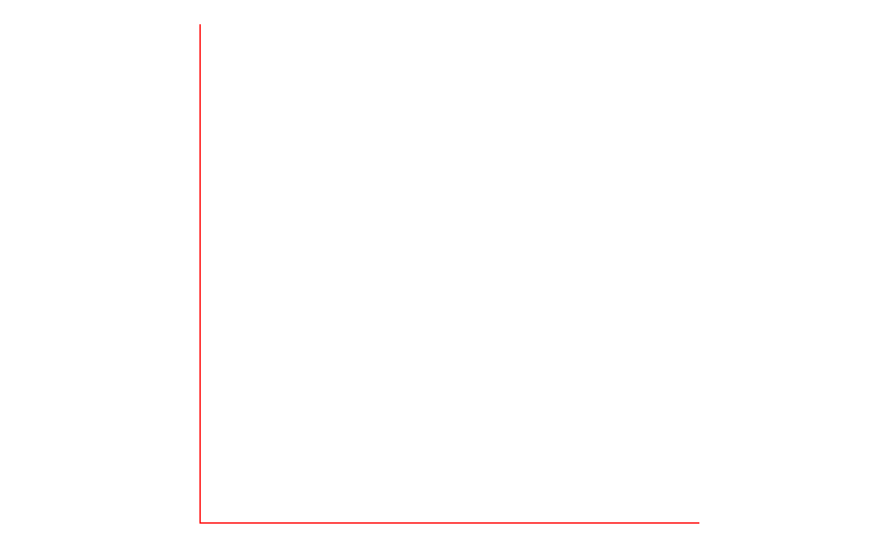

Creates an empty, 2-dimensional, coordinate axes using ggplot2: no
scales, no tick marks, no axis labels.
put_axes(quadrant = NULL, col = NULL, size = NULL)
Arguments
| quadrant | : The quadrant to plot, 1, 2, 3, 4, or 0 for all four. Default is the first quadrant. |
|---|---|
| col | : Line color, default is |
| size | : Line width, default is |
Value
The empty axes.
Details
The size of the figure is determined when printed, e.g., using knitr
in an R Markdown script, the figure height in inches is set with the
fig.height code chunk option.
Examples
put_axes()put_axes(quadrant = 0)put_axes(col = "red")put_axes(size = 1)# NOT RUN { # In an R Markdown script ```{r fig.height = 3.2} put_axes() ``` # }